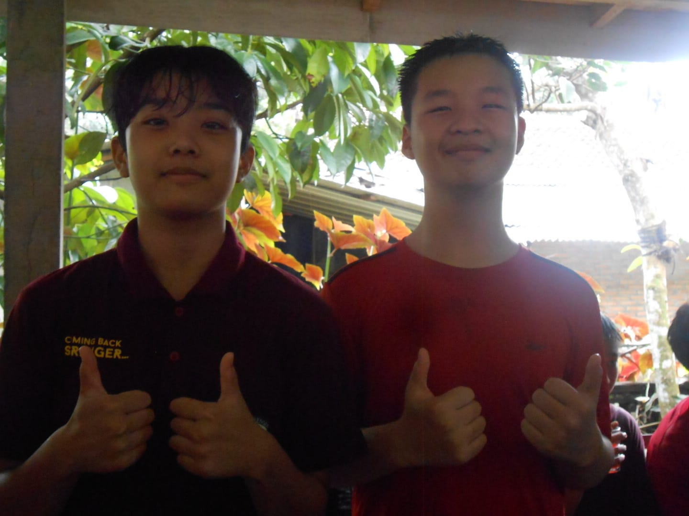
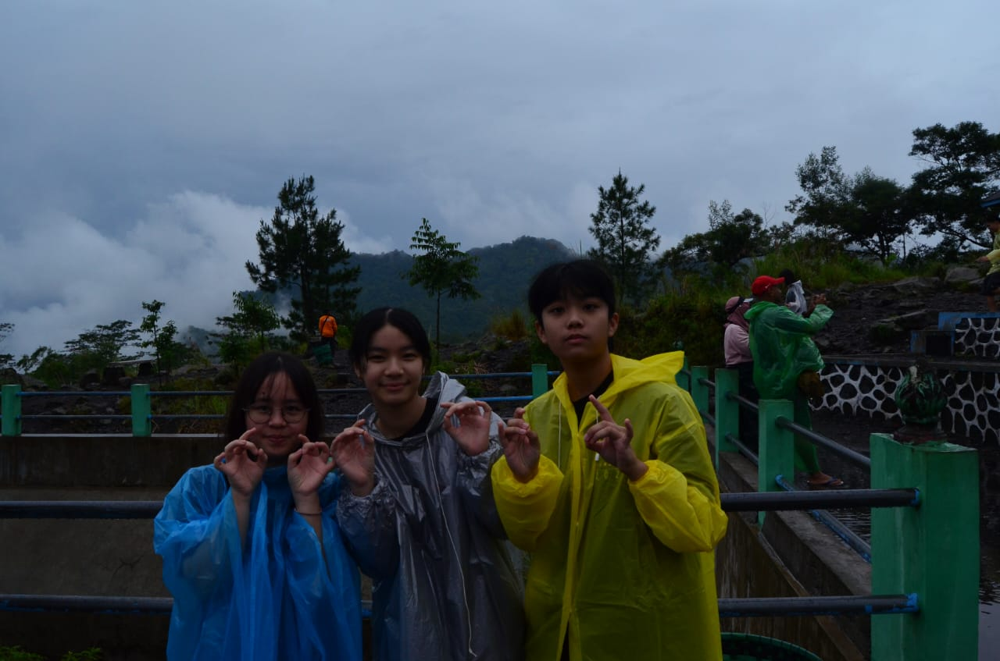
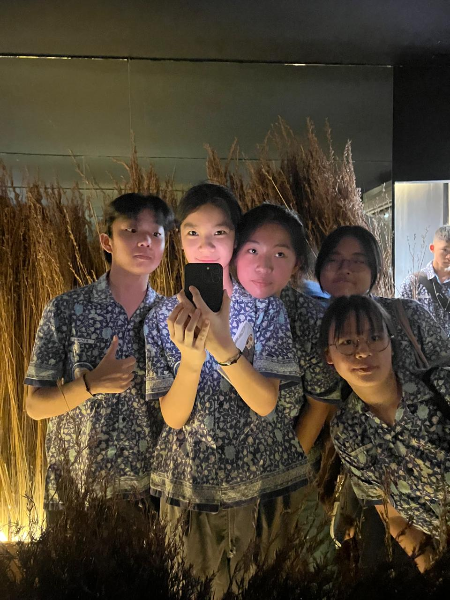
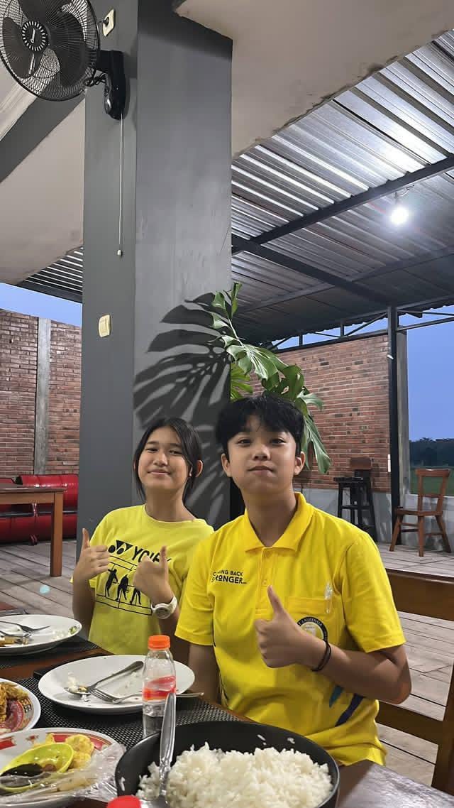
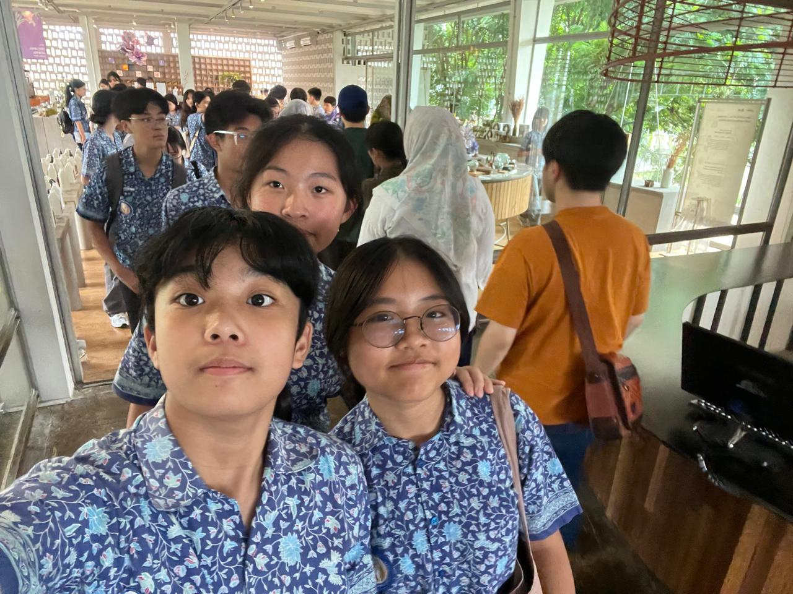
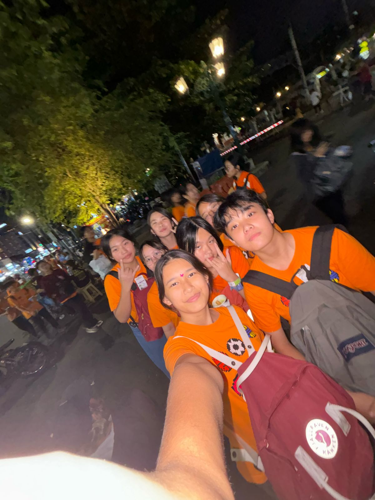
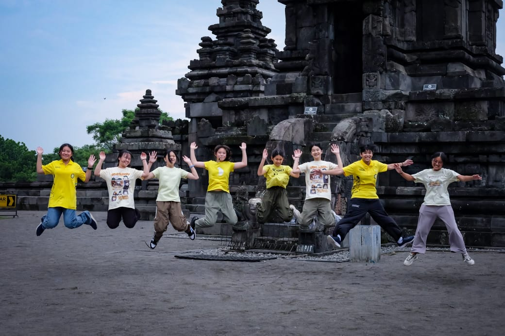

Halo semuanya! Perkenalkan, nama saya Fiona Jocelyn Sulistya dari kelas 8D di SMP Santa Laurensia. Pada semester kedua tahun ini, saya berkesempatan mengikuti Edutrip ke Yogyakarta dan Solo, sebuah perjalanan edukatif yang berlangsung selama 7 hari 6 malam, mulai Sabtu, 8 Maret 2025 hingga Jumat, 14 Maret 2025. Melalui Edutrip ini, saya tidak hanya mendapatkan pengalaman berharga, tetapi juga memperluas wawasan dalam berbagai aspek. Tugas ini merupakan bagian dari mata pelajaran TIK, serta mencakup bidang studi lain seperti Agama, Bahasa Indonesia, Bahasa Inggris, IPS, Bahasa Mandarin, dan Pendidikan Pancasila. Saya sangat antusias untuk berbagi pengalaman serta pembelajaran yang saya peroleh selama perjalanan ini. Terima kasih!
      